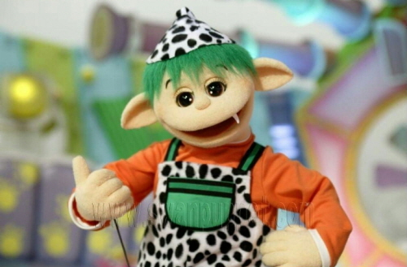

춤을 추는 사람’이 좋다. 언제부터 이런 생각을 하게 되었더라… 기억을 거슬러가보면 2016년에 닿게 된다. 프로듀스 101 레벨 평가에서 청하를 보고 어떤 종류의 충격을 받았다. 그때부터 아이돌은 노래는 좀 못해도 되지만 춤은 꼭 잘 춰야 한다고 생각하게 됐다. (개인의 주관적인 의견이며 반박시 모든 의견을 수용합니다.) 이후 힛더스테이지, 댄싱하이등의 경연 프로그램을 거쳐 마침내 2021년, 스트릿 우먼 파이터와 만나게 된다. 이전까지는 코레오그래피(안무)와 아이돌 그룹의 댄스 담당 멤버(내지는 댄스 전공 멤버)를 찾아보는 게 전부였다면 2021년을 기점으로 장르와 댄서에 관심 갖게 됐다. 장르에 대해 알게 되면서 단순히 ‘내가 좋아하는 안무는 이런 느낌이구나~’ 생각하는 것에서 ‘나는 왁킹, 텃팅, 힙합을 좋아해’ 라고 말할 수 있게 됐다.
춤을 그렇게 좋아하면 직접 춰봤겠네? 대답은 완전한 NO다. 우선 초등학생 시절 방송댄스 주말 방과후를 들었던 적은 있지만 그때도 몸치인 편에 속했고, 이후로는 학업과 입시로 바빠서 춤을 배우겠다는 생각도 못 했다. (솔직히 시간이야 만들 수도 있었겠지만 스스로 몸치인 걸 알아서 엄두가 안 났다.) 그렇게 댄서들의 배틀이나 퍼포먼스 영상을 열심히 찾아보며 (정말 보기만 했다) 지나간 시간이 2년, 공교롭게도 휴학과 스트릿 우먼 파이터 시즌2의 방영 일정이 겹치게 된다. 마침 시간도 많겠다 뚝딱이반 (뚝딱이들을 위한 원데이 팝업 클래스) 수강을 고민하던 때에 친구들이 바람을 넣었고… 그렇게 팔랑귀 뚝딱이는 홍대 모 댄스 스튜디오에 방문하게 된다. 뚝딱이반은 수업이라 쓰고 팬미팅이라 읽는 행사였다. 90분간 거울 속의 나를 바라보며 자괴감을 느끼는 시간을 견디면 눈 앞에서 내가 좋아하는 댄서가 춤 추는 모습을 볼 수 있고 수업이 모두 마무리 되고 난 뒤엔 짧은 셀카타임과 1:1 대화 시간도 가질 수 있었다. 그러니까 댄서를 덕질하는 가장 좋은 방법은 그 댄서의 수업을 듣는 것이고 프로 수준의 수업까지 들으려면… 당연히 댄서가 되어야 한다. 스케줄과 수업 난이도를 고려했을 때 내가 갈 수 있었던 수업은 총 두 번, 그렇게 두 번의 수업에 다녀오고 난 뒤엔 본격적으로 춤을 배워보고 싶다는 생각이 들었다. 그 길로 집 근처 댄스 학원의 기초반을 등록한 지 어언 두 달, 여전히 뚝딱이지만 거울 속의 나를 똑바로 마주할 수 있는 날을 기다리며 연습실로 향한다.
Ps. 댄스 학원에 다닐 생각이 있는 뚝딱이들에게
스트릿 학원의 기초반은 대부분 준비운동 시간에 근력운동을 합니다…… 모두들 이 글을 참고하셔서 너무 불편한 옷은 입지 마시고 마음의 준비도 하고 가세요.
구몬학습 홈페이지에서 성인 중국어, 일본어 카테고리에 들어가서 스크롤을 내리면 첫 번째로 뜨는 문구는 ‘내가 좋아하는 아이돌이 중국어로 말할 때 바로바로 알아들으면 얼마나 좋을까요?’ ‘나의 덕질이 더 행복해 질 수 있도록’ 이다. 언어를 배우는 가장 빠른 방법은 그 언어를 사용하는 사람과 연애하는 것이라는 말도 있지 않은가. 사랑하게 되면 당연히 그 사람이 하는 말을 알아듣고 싶어지고 그 사람이 살아온 환경을 알고 싶어진다. 번역으로는 말의 뉘앙스까지 전하기 힘들고 살아온 환경을 모르면 상처주기 쉬워진다. 거창하게 말했지만 정리하자면 내가 대만 남자를 좋아하게 됐고 그래서 휴학하고 쉬는 동안 대만이라는 나라와 중국어 (편의상 이렇게 쓰지만 사실 만다린이라고 쓰는 걸 선호하게 됐다) 에 관심을 갖게 됐다는 소리다. 거기에 여러가지 이유가 더해져 이번학기 교양을 언어로 꽉꽉 채운 탓에 이번학기에만 5개국어를 해야하는 사람이 됐지만 괜찮다. 어쨌든 사랑은 떠나가도 언어는 남으니까.